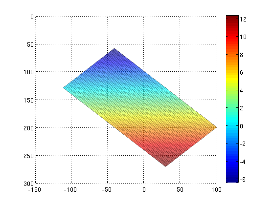
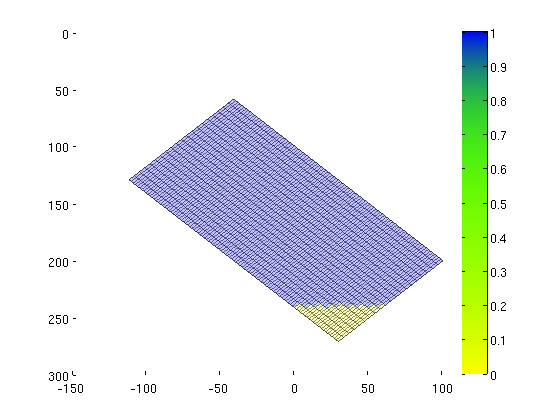

Contents
Investigate effects of gravity in an inclined geometry.
n = [ 20, 2, 100]; % -> 45,000 cells box_sz = [100, 10, 200]; G = cartGrid(n, box_sz); % Perturb nodes N = (n(1)+1)*(n(2)+1); [i,j] = ndgrid(1:2:N, 1:n(3)); k=sub2ind([N,n(3)], i,j); %G.nodes.coords(k, 3) = G.nodes.coords(k, 3)+10; G = computeGeometry(G);
Set rock and fluid parameters
rock = struct('perm', repmat(0.1*darcy, [G.cells.num, 1]), ... 'poro', repmat(0.3 , [G.cells.num, 1])); fluid = initSimpleFluid('mu' , [ 0.307, 0.049] .* centi*poise , ... 'rho', [973 , 617 ] .* kilogram/meter^3, ... 'n' , [ 2 , 2 ]);
Set gravity direction
rot = @(theta) makehgtform('xrotate', theta(1), ... 'yrotate', -theta(2), ... 'zrotate', -theta(3)); mul = @(a,b,n) a(1:n,1:n) * reshape(b(1:n), [], 1); %angle = [pi/4, pi/6, 0]; angle = [0, pi/4, 0]; gravity reset on gravity(mul(rot(angle), gravity(), 3));
Assemble linsys components
S = computeMimeticIP(G, rock, 'verbose', true);
Using inner product: 'ip_simple'. Computing cell inner products ... Elapsed time is 0.353432 seconds. Assembling global inner product matrix ... Elapsed time is 0.003692 seconds.
Solve flow problem
Put region of CO2 at bottom of reservoir.
xr = initResSol(G, 1*barsa, 1); d = gravity() ./ norm(gravity); c = G.cells.centroids * d.' > 110; xr.s(c) = 0; xr = solveIncompFlow(xr, G, S, fluid);
Plot flow output
cla reset ax = gca; h = plotCellData(G, convertTo(xr.pressure(1:G.cells.num), barsa), ... 'EdgeColor', 'k', 'EdgeAlpha', 0.1, 'FaceAlpha', 0.625); trans = hgtransform; set(trans, 'Parent', ax, 'Matrix', ... makehgtform('translate', [ box_sz(1), 0, box_sz(3)], ... 'xrotate' , -angle(1), 'yrotate', angle(2), ... 'translate', [-box_sz(1), 0, -box_sz(3)])); set(h, 'Parent', trans); view([0,0]), grid on, %camproj perspective colorbar mat = get(trans, 'Matrix');
dT = [1, 2, 2, 5, 5, 10, 15, 20, 40, 50, 50, ... 100, 100, 200, 200, 300, 400, 500] .* day(); dT = [dT, [2, 2, 2, 4, 5, 5, 10, 10, repmat(15, [1, 34])].*year()]/200; clf, ax = gca; h = plotGrid(G, 'FaceColor', 'none', 'EdgeAlpha', 0.1); trans = hgtransform; set(trans, 'Parent', ax, 'Matrix', mat); set(h, 'Parent', trans); view(0,0); thresh = 2; hs = plotCellData(G, xr.s, find(xr.s < thresh), 'EdgeColor', 'k', ... 'EdgeAlpha', 0.1, 'FaceAlpha', 0.25); set(hs, 'Parent', trans) s = linspace(0, 1, 8192).'; cm = [1-s.^(13/16), 1-s.^6, s.^6]; colormap(cm) %view([45, 5]), grid on, camproj perspective colorbar
t = 0; for k = 1 : 10, xr = implicitTransport(xr, G, dT(k), rock, fluid, 'Verbose', false); % Check for inconsistent saturations assert (max(xr.s) < 1+eps && min(xr.s) > -eps); % Increase time and plot saturation t = t + dT(k); delete(hs) hs = plotCellData(G, xr.s, find(xr.s < thresh), 'EdgeColor', 'k', ... 'EdgeAlpha', 0.1, 'FaceAlpha', 0.25); set(hs, 'Parent', trans) view(0,0) drawnow % Compute new flow field. xr = solveIncompFlow(xr, G, S, fluid); end